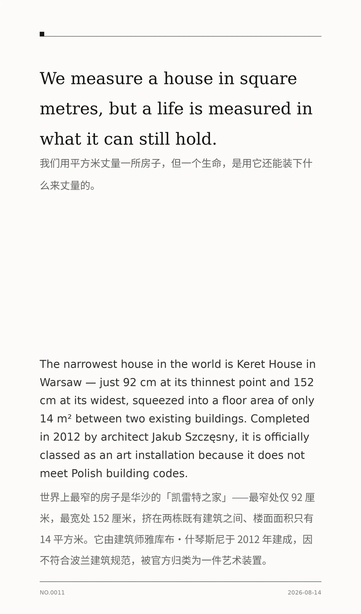

We measure a house in square metres, but a life is measured in what it can still hold. （我们用平方米丈量一所房子，但一个生命，是用它还能装下什么来丈量的。）
The narrowest house in the world is Keret House in Warsaw — just 92 cm at its thinnest point and 152 cm at its widest, squeezed into a floor area of only 14 m² between two existing buildings. Completed in 2012 by architect Jakub Szczęsny, it is officially classed as an art installation because it does not meet Polish building codes. （世界上最窄的房子是华沙的「凯雷特之家」——最窄处仅 92 厘米，最宽处 152 厘米，挤在两栋既有建筑之间、楼面面积只有 14 平方米。它由建筑师雅库布·什琴斯尼于 2012 年建成，因不符合波兰建筑规范，被官方归类为一件艺术装置。）
0442e5ed1cf96d98冷知识由执笔的模型自行查证。逐条断言、来源与所引原句存档在纯文字副本里，未经程序逐字校验，留作事后核实。